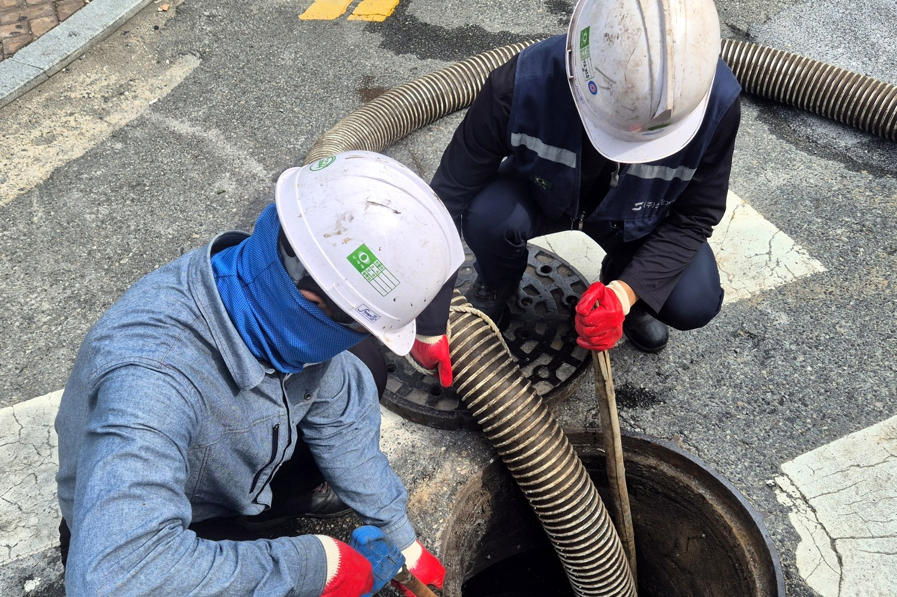
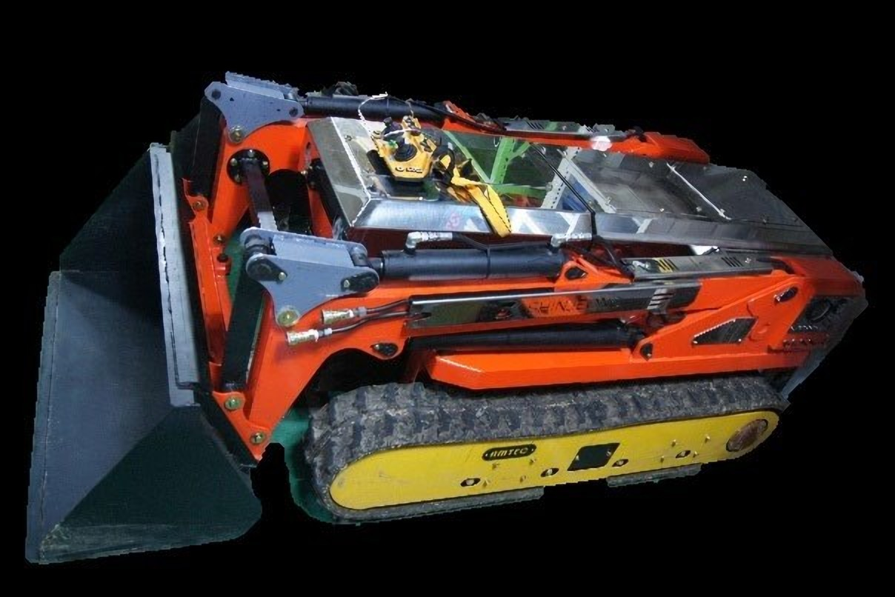
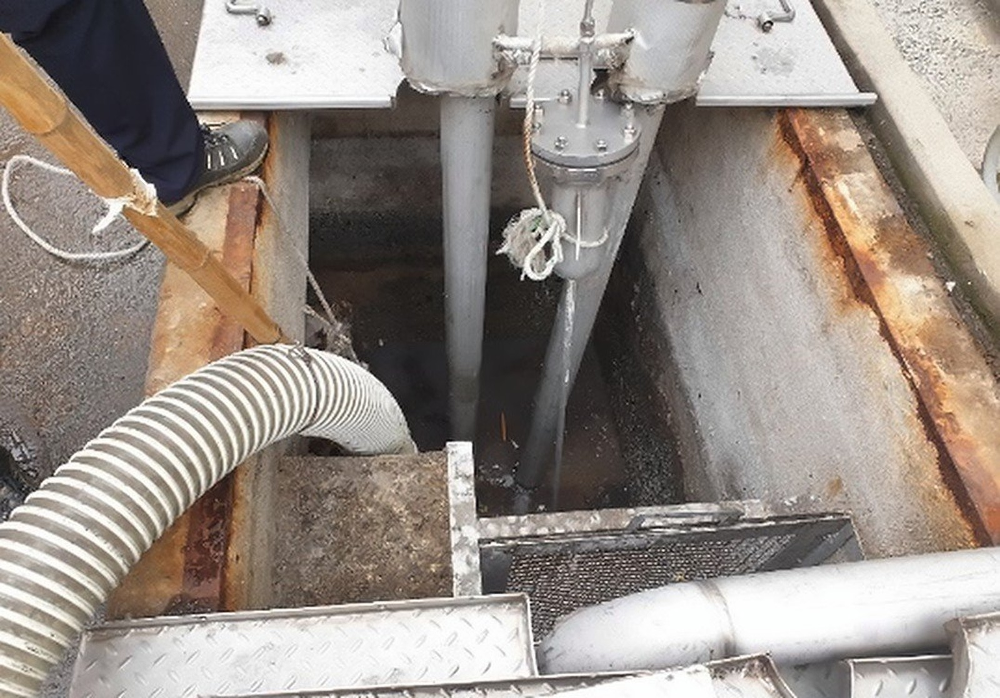
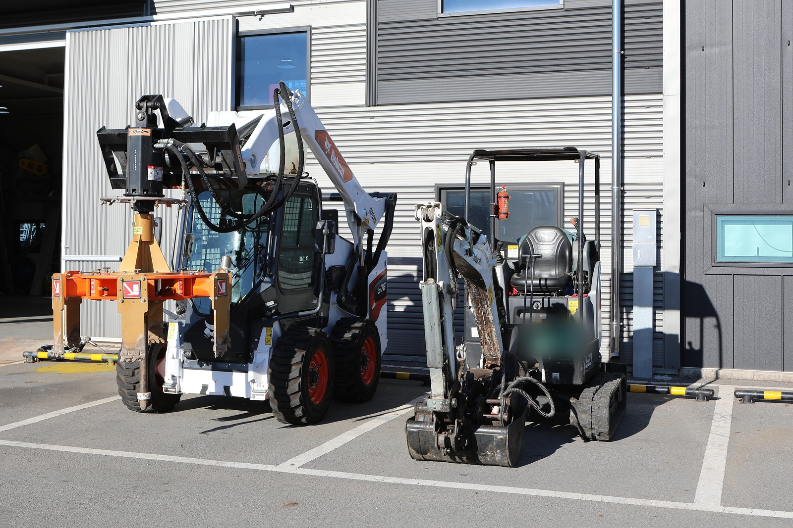

- 작업 범위
- 하수도 퇴적물
- 하수처리시설
- 오수관
- 폐수처리장 슬러지
- 주요 장비
- 무인준설로봇(파쇄형·흡입형) · 무인로더 · 스키드 로더 · 소형 굴삭기(1.8톤) · 데칸타
- 수행 실적
- 준설작업 단가계약 4년 연속
- 회수 뒤
- 데칸타·필터프레스로 탈수해 처리량을 줄입니다
- 문의 시
- 시설 종류 · 대상 물질 · 현장 상태 · 희망 작업 시기
04준설·슬러지 회수작업 방식
준설부터 탈수까지
무인 장비로 회수하고, 회수한 슬러지는 탈수해 양을 줄입니다
작업 장면
회수물을 줄여 처리합니다
회수물은 Screw Decanter · Filter-Press로 고액 분리해 양을 줄이고, 일반 · 지정폐기물 수집 · 운반까지 맡습니다.
처리량 감량 · 처리비용 감소 · 처리시간 단축
작업 장면 모두 보기

 02
02흡입 · 운반
진공흡입차(습식)로 회수물을 흡입해 옮깁니다
진공흡입차(습식) 5대- 03탈수 — 데칸타03
탈수 — 데칸타
- 원액 투입
- 세정수 투입
- 원심분리
- Cake 배출
- 분리액 배출
데칸타 10마력 1대 - 04탈수 — 필터프레스04
탈수 — 필터프레스
- 원액 투입
- 여과판 압착
- 여과액 배출
- Cake 탈거
- 여과판 세척
탈수 효과폐기물 처리량 감량폐기물 처리비용 감소폐기물 처리시간 단축
준설 현장
퇴적물을 준설하는 현장입니다

04준설·슬러지 회수보유 장비
준설 · 탈수 장비
무인준설로봇과 무인로더를 원격으로 조종해 퇴적물을 준설하고, 회수한 슬러지는 데칸타로 탈수합니다.

| 장비 | 규격 | 용도 | 보유 |
|---|---|---|---|
| 무인준설로봇(파쇄형·흡입형) | — | 준설 | 2대 |
| 박스무인준설로봇 | — | 준설 | 1대 |
| 무인로더 | — | 준설 | 1대 |
| 무인궤도로더 | — | 준설 | 1대 |
| 스키드 로더 | — | 준설 | 1대 |
| 미니 포크레인 | SV-08 | 준설 | 1대 |
| 소형 굴삭기 | 1.8톤 | 준설 | 1대 |
| 진공흡입차(습식) | 7.5 / 12㎥ | 폐기물 수집·운반, 준설 | 5대 |
| 데칸타 | 10마력 | 슬러지 탈수 (혐기성 오니) | 1대 |
| 유압 트래시 펌프 | — | 준설 | 1대 |
| 오수 배수 펌프 | 220LPM | 준설 | 2대 |
04준설·슬러지 회수알아 두실 점
Pond Cleaning 용도별 적용 예시 — 로봇을 쓸 때 좋아지는 점과 유의할 점
좋아지는 점
- 연속 작업 가능 — 조작자 교대, 장비 연속 가동
- 작업자 안전 확보 — 신체, 근골격계, 넘어짐 등
유의할 점
- 작업자 추가 투입 필요 — 투입 최소화로 위험도 감소
- 작업 시간 제한 — 배터리 교체 및 충전
- 비방폭지역 사용
적용 범위
- Open Ditch, Pond 하부 퇴적물 처리
- 작동 설비 하부 퇴적물 처리
- 오염 지역 진입로 확보 등
- 인력 작업이 힘든 고착 Sludge 제거
관련 기술 이 분야와 닿는 특허 · 연구개발 · 로봇
- 등록 특허관내부 무인 준설 처리 시스템2017
- 등록 특허스크류 바퀴를 구비한 수륙양용 준설로봇2020
- 등록 특허소형관로 준설로봇 및 그 운전방법2020
- 연구개발 과제수중 슬러지 수거 무인 자율 이동 로봇 시스템하수도 슬러지 제거 · 유압 구동
04준설·슬러지 회수
퇴적물 · 슬러지 준설이 필요하신가요?
시설 종류 · 대상 물질 · 현장 상태 · 희망 작업 시기 등을 알려 주시면 가능한 작업 범위와 진행 방법을 안내해 드립니다.